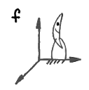

About Me
Education
Purdue University, Class of 2020
GPA: 3.91/4.00

B.S. Aeronautical & Astronautical Engineering
- Major Concentration: Dynamics and Controls
- Minor Concentration: Design
Notable Coursework
-
Dynamics and Vibrations
- Studied various aspects of particle dynamics, attitude dynamics, and oscillatory motion.
- Analyzed various dynamical systems through state-space models and numerical integration in MATLAB (code).
-
Systems Analysis and Synthesis
- Studied methods of controlling linear time-invariant systems.
- Studied concepts of stability, observability, and controllability.
- Designed various state-feedback and output-feedback controllers using MATLAB and Simulink (code).
-
Orbit Mechanics
- Studied various types of spacecraft orbits and maneuvers using the two-body assumption.
- Designed various planar and three-dimensional trajectories using maneuvers, flybys, Lambert arcs, and MATLAB (code).

B.S. Computer Science
- Track: Machine Intelligence
Notable Coursework
-
Computer Architecture
- Studied detailed design of computer hardware and low-level software.
- Designed circuits to perform specific tasks using breadboards.
- Programmed various functions in ARM Assembly using Raspberry Pi 3.
-
Data Structures and Algorithms
- Studied commonly-used data structures and software algorithms.
- Utilized Java to complete programming projects involving optimization, sorting, binary trees, hashing, and graphs.
-
Systems Programming
- Studied low-level software and extreme programming principles.
- Created custom memory allocation function using C.
- Created custom UNIX shell using Lex, Yacc, and C++.
- Created custom HTTP Server using C++.
- Designed and implemented responsive, mulit-user HTML5 app using JQuery and Amazon Elastic Beanstalk.
-
Information Systems
- Studied various aspects of relational database design and use.
- Utilized Oracle and MySQL to complete programming projects involving querying and updating databases.
- Utilized Hive to partition and analyze 10 GB of airline data.

Minor in Philosophy
Notable Coursework
- Critical Thinking
- Fate and Free Will
Industry Experience
Dynetics, Inc.
- Engineering Intern
- Missile & Aviation Systems
- Created, debugged, and refactored over 100,000 lines of trajectory simulation code using C++ and Microsoft Visual Studio.
- Created intuitive Windows GUI using C# and WPF/XAML.
- Trained machine learning models in Python to provide real-time situational awareness.
GE Aviation
- Engineering Intern
- Lafayette Engine Facility
- Provided daily support to Maintenance, Repair, and Overhaul operations on LEAP 1A and 1B turbofan engines.
- Designed custom tools and storage pallets using AutoCAD and Inventor.
- Worked in team-centered, self-starting environment with little direct supervision.
Leadership Experience

Supplemental Instruction
- SI Leader
- Aeromechanics I, Purdue University
- Organize and facilitate collaborative learning sessions to improve students' understanding of basic dynamics and statics.
- Hold weekly office hours to discuss homework problems, exam preparation, and key course concepts with struggling students.
Sigma Gamma Tau
- President
- Alpha Chapter, Purdue University
- Oversee all committees to ensure appropriate scheduling, preparation, and execution of events.
- Serve as primary representative to faculty, staff, and SGT National to foster positive relationships and reputation.